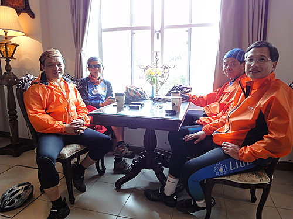
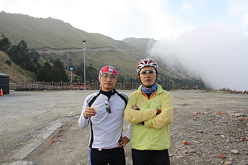
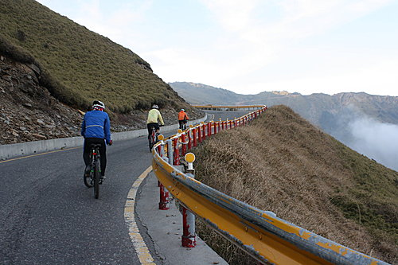
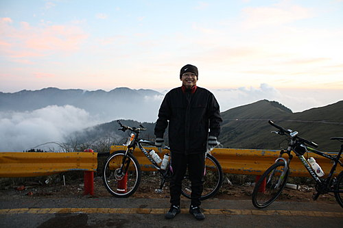

行程概要：
在梅峰農場享用中餐，小睡片刻，下午2點出發，依序經過翠峰、鳶峰、昆陽，6點10分全員攻上武嶺，晚上下榻合歡山松雪樓。
本日路線圖
本日落差圖
梅峰農場－中餐、午睡
農場海拔約2100公尺，栽植數百種各式溫帶植物，正值春暖花開，異卉爭妍，尤其桃花遍開，彷彿世外桃源，遊客絡繹不絕，但大伙早已飢腸轆轆，無餘力觀賞美景，直奔餐廳享用豐盛午餐，滿桌佳餚，一下子就被狂掃而空，
吃飽喝足時約12點40分，秘書小獅宣布在梅峰農場自由活動到1點30分，本想說會有隊員跟隨其他遊客的步伐漫步農場，欣賞百花盛開的美麗饗宴，但此時此刻大伙不約而同，都只想把握時間充電，只要能睡，大家都不計形象，或趴在桌子上，或席地倚靠牆壁，或躺在草皮上（不管草皮上有無螞蟻）等各式各樣睡姿都出現了。周遭的美景與我們完全脫節。

約下午1點30分左右，大伙陸續睡醒，前往農場遊客中心品 嚐咖啡，約下午2時左右，因休息過後精神飽滿，以及咖啡因的加持，再加上再騎約18公里就能攻上中橫路段最高點武嶺，大伙無一不是旺盛鬥志地再跨上坐墊繼續推進，展開了最後的攻頂路程，但這旺盛的鬥志沒有持續多久。
梅峰農場－翠峰
梅峰上去的路，開始變窄了，某些彎道甚至無法會車，僅容一部車通行，雖然車子已經不多了，但是幾乎都是載運高山蔬果的大貨車，這些大貨車駕駛車速快，非但不禮讓我們這些單薄的騎士，按喇叭伺候還算客氣，甚至阿山哥還一度在過彎時遇到，一輛大貨車從後面急速駛來，不但沒有減速，而且還不斷逼近已經緊靠馬路邊界騎乘的阿山哥，過程險象環生，驚心動魄，因此只要聽到後方有車子行駛的聲音，大伙會相互提醒閃避。
除了要費神留意大貨車外，這路段最折磨人的是，綿延無止境的陡坡，還要適應高海拔稀薄的空氣，在缺氧的狀態騎乘，頭昏腦脹，甚至偶爾還有昏炫、幻覺的現象，平均騎乘1公里不到就要下車休息、喝水、拉筋，作作蛤蟆功，此時隊員們三三兩兩成群結隊，貓哥、莉莉一組作先鋒；阿山哥、小揚、我一組緊追在後；小紀、小鍾、小獅、小益一組壓隊，我想當時若沒有這樣互相結伴，攻頂的意志與信心早被險峻的山勢消耗殆盡。
翠峰－鳶峰
約騎乘一個小時，過了翠峰沒多久，補給車在前方一處空 地迎接我們，我們次集團陸續抵達，加水、運動飲料，吃香蕉補充熱量，小揚與我共同PLAY一瓶蠻牛，在此彼此互相分享方才騎乘的痛苦與心路歷程，休息10分鐘後，肉粽大哥，催促著我們趕快上路，並指著前方約３公里彎道盡頭，表示：「過了這彎道，就到鳶峰了，我車子在那裡等候大家，加油」，被他這麼一說，我們又重燃鬥志跨上坐墊再往上推進。
視線緊盯著彎道盡頭，努力踩著腳踏，好不容易抵達彎道，一過彎非但不見鳶峰蹤影，映入眼簾又是綿延無止盡的陡 坡，差點沒腿軟，真想下來牽車，不過看到阿山哥與小揚仍在旁奮力踏著，支撐著我繼續咬著牙埋頭苦幹，幾次下車休息時，大家面面相覷、表情猙獰，阿山哥還數度向我跟小揚表示他「真的沒力了，要下來牽車」，在這節骨眼上同組的成員，彼此都互為精神支柱，若阿山哥放棄了，我想我跟小揚也會緊接信心潰提，因此小揚跟我輪番為阿山哥打氣「再撐一下，快到了」。不過，阿山哥說是這樣說，每次再起步時不一會兒，就又把我跟小揚海放了，徒留我與小揚納悶：奇怪不是沒力，要牽車了嗎？怎麼還騎這麼快？
再經過無數個彎，早已耗盡體力，才終於抵達肉粽大哥口中一下子就到了的鳶峰休息站，當時處於背陽面，氣溫約15度 左右，休息幾分鐘開始冷得發抖，幸好肉粽早已沏好一壺熱騰騰高山茶，喝下一口熱茶，身子馬上暖和了起來，另外吃幾片路人贊助的芭樂，約5分鐘，肉粽再度鼓勵說「快到了，再上去一下子就到昆陽停車場了（武嶺下方約2公里處）」，我跟小揚怕身子冷了，迫不及待，立刻上車繼續往上推進。
鳶峰－昆陽
由鳶峰停車場到昆陽停車場這路段，肉粽這次沒騙我們，路程不會很長，但是這段坡度之嚴峻卻是本日路段之最，還有幾個累死人不償命的髮夾彎，終於撂倒了許多隊員，有人開始下來步行、牽車。
美麗的髮夾彎，但騎起來要人命阿
不知道這張照片，有沒有符合隊長揭示的隱惡揚善原則？
昆陽停車場
抵達昆陽時已經下午5點20分左右，可見群山環繞，十分壯麗，期盼很久的武嶺也終於出現在我們的視線內了，當時又冷又餓，但補給車上的食物已吃光了，只好請肉粽大哥沖泡僅剩的三合一咖啡補充熱量。

武嶺已經出現在視線可及範圍

昆陽－武嶺
約下午5時30分，我們再度啟程完成最後一段的攻頂之旅，然我左大腿及膝蓋經一天騎乘下來，隱約作痛，騎乘的龜速竟比牽車的速度還慢，時速約僅3至4公里，所以自然是團員中最後一個抵達武嶺，抵達時已經下午6點10分，太陽正好要沒入群山之中，仍殘留些許夕陽餘暉，小獅、小鍾、小揚、小益及我把握時間照相留念，不一會兒太陽完全沒入群山之中，氣溫驟降到僅攝氏2度，由武嶺往下滑行到松雪樓路程，寒風刺骨，冷到全身發抖、指尖被凍到麻痺。
貓哥首先攻抵武嶺留影
我騎上武嶺時的天色

小鍾：車齡僅1個月，在武嶺留影
松雪樓晚餐的決議
小獅、小揚、小益及我抵達松雪樓時，貓哥、莉莉、小紀、阿山哥、小鍾早已苦候多時。今晚住松雪樓，每人單獨一間房間，CHECK－IN後先洗澡，約七點餐廳集合用餐，享受一客500元的大餐。吃飽飯後，小紀隊長小獅秘書面色凝重地召集大家開會，提議明天原訂由武嶺騎到天祥的行程改為「上補給車，坐車沿途欣賞美景」，當時這提議無疑是大家共同的心聲，全體無異議一致通過，大家均如釋重負（但誰也沒料到，經過一夜的休息，劇情竟急轉直下，請見下篇內容），之後各自返回房間休息，但不知道是累壞了，還是高山症作祟，多數成員頭部兩邊太陽穴附近隱隱作痛，而且大部分的人都失眠了。
午餐觀賞完桃花祭後啟程至武嶺路段， 途經梅峰、翠峰、鳶峰真是峰峰相連， 無數的爬坡及髮夾彎， 無數的汗水及鼓勵， 終於讓我完成全台公認最艱難的自行車路線， 感謝八位隊友的情義相挺， 暨肉粽兄的延途鼓勵及服務， 由其超哥、郁山及吳大仍不遠千里來電鼓勵及關心。 圓夢的感覺，真好。 歡迎，河東獅的車友， 有興趣的話， 明年春天， 一起挑戰新中橫+阿里山公路。 小獅